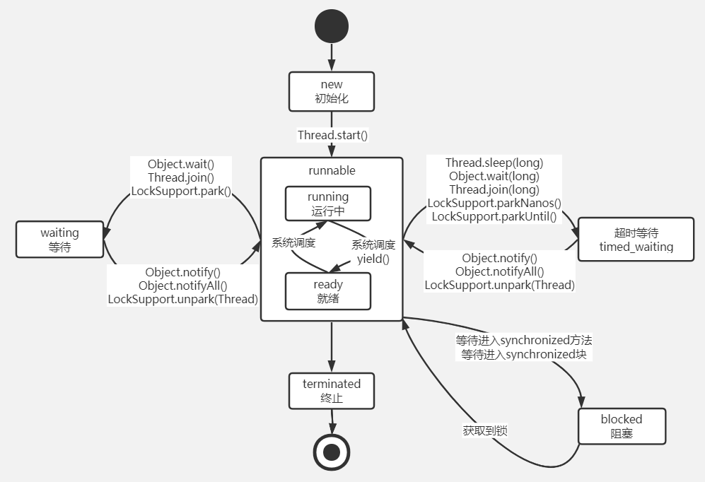

多线程基础：

进程和线程：
一个进程中可以有多个线程，一个进程中至少要有一条线程，该线程就是主线程
进程：进程就是所有的线程集合，是cpu的一个分配单元
线程：程序执行的路径，执行必须按照从上往下的顺序来执行，是进程中的一个执行单元
tips： 如果在多线程情况下，代码执行顺序就不是从上往下执行了
多线程的好处：
同时且并行执行程序，提高程序效率
多线程的应用场景：
对后端接口中比较耗时的代码可以采用多线程来实现（比如请求–qq通知–邮箱通知的场景）
异步实现日志的记录（单独开线程去进行日志的记录，不影响原有的代码）
意义：快速提升Http协议的响应，提升用户体验
抢票系统 ，秒杀业务
后端开发为什么用到多线程？
http协议默认情况是采用同步的形式，采用多线程可以异步高效的执行程序
如何理解多线程中的上下文切换：
CPU切换线程概念：
单核cpu的服务器中，开启多线程不是真正的多线程，因为单核cpu服务器在同一个时刻只能运行一个线程，只是运行的线程快速切换到另一个线程。cpu的核数越多，就越可以减少cpu的切换
使用多线程有什么缺陷：
开启多个线程会导致cpu的不断切换，会耗费大量的cpu资源（cpu），影响服务器的性能
项目比较小可以采用多线程实现异步，
项目比较大的情况建议使用mq实现异步
实现多线程的几种方式：
继承Thread类：
重写run（）方法，run方法里面就放的是要执行的代码
创建该线程实例
调用start方法
实现Runnable接口
重写run（）方法，run方法里面就放的是要执行的代码
将实现接口的线程实例传递到新创建的线程中
调用start方法
实现Callable接口
（本身是开了一个线程单独去处理业务实现多线程，但如果要获取其中的返回值内容，在主线程中其实就还是单线程了）
重写call方法
主线程中将子线程传递到FutureTask中用来接收返回值
通过FutureTask对象可以开启线程和接收返回值
开线程池（常用）
提供线程的复用机制，防止频繁的创建销毁线程，耗费系统资源
执行excute方法
其他方式：
5.Spring中使用@Asyc注解来开启多线程，其实也是基于线程池进行了封装。单独开一个线程异步执行，达到快速响应用户请求的目的
使用场景：
用户登录请求过来，有多个业务要围绕该请求来执行，比如记录登录日志，发送短信通知，发送Email通知。通过使用注解异步去在后台执行这些操作，而在主线程中执行登录操作并直接返回成功，大大缩减了响应时间。但是如果想要拿到子线程中的返回结果，虽然是执行了异步的操作，但在主线程中就还是单线程同步的执行这些操作
主线程+子线程+用户线程+守护线程的概念辨析：
主线程就是main方法
子线程就是在主线程环境下的线程
用户线程+守护线程：是子线程的两种称呼
当主线程停止之后，用户线程不会随着主线程停止；守护线程则相反
默认创建线程都是用户线程，通过调用 threadxx.setDaemon(true)就可以变成守护线程，默认是false
守护线程场景：GC垃圾回收
如何停止一个线程？
为什么不建议使用stop方法结束一个线程？
1.首先，如果使用stop方法会强制执行停止线程的操作，对于用户线程，本身可能还未执行完毕，强行停止可能会引发线程安全问题。这种方式不推荐，已经过时
2.场景：使用volatile关键字在类中创建一个私有为ture的变量，并配合一个更改变量为false方法a，然后在run方法进行while（true）循环。设置阻塞时间，阻塞时间一过，就会执行停止线程的自定义方法a，然后修改变量，停止线程。
（ps：volatile关键字：保证线程可见性，即子线程的执行状态被主线程观察到）
多线程五种状态：

《使用sleep代表将线程从运行状态变为阻塞状态，就是说将多个线程给堵死了，堵死的时间越久，线程之间的竞争就越激烈，出现脏读的概率就越大）》
总结：好端端的程序为什么要用多线程呢？（多线程的好处？）
为了提高http协议响应速度，给用户比较友好的体验
对于web开发而言，使用多线程 的一个重要目的就是异步去处理业务，快速响应用户的请求，给用户良好的体验
多线程之间如何实现同步（玩的是线程和线程之间问题的出现和解决）：
如何定义线程安全问题？
线程安全问题，其实这里由三个概念：
1.线程不安全：操作并非原子，多线程环境下执行一段代码，如果这段代码的结果受到多线程执行前后（时序）的影响，这些多线程会发生竞争的状态，此时就是线程不安全。
2.线程安全：多个线程去访问某个类的时候（可以是对这个类中属性的增删改之类的操作），如果这个类表现出我们预期会出现的行为，那么就可以称为是线程安全的。
3.我们常说的“解决线程安全”问题，其实说的是由“非预期的状态—>转化为—->预期的状态”。
1.线程安全问题是什么？（线程安全问题在什么场景下发生？）
例子：
多个线程—同时—共享—同一个全局变量—做 写 操作，线程与线程之间就会互相干扰，那么就导致了线程安全问题
场景：秒杀项目中，库存为1的情况下，两个用户都进行了下单操作，下单业务的两个线程同时都会获取到库存=1的产量，执行完之后就会发现超卖了，就是库存已经没有了但是其中一个用户还是下单成功了。这就是线程安全问题的出现
2.怎么解决线程安全问题：
思想：让多个线程在同一时刻只有一个线程执行。这个时候，在多线程与多线程之间，就成为了排队的状态，也就是单线程。注意这里的单线程说的是在线程和线程所在的空间。
那既然已经变成了单线程，为什么还要使用多线程呢？
注意，这里说的单线程是在多线程环境下，线程与线程之间有序进行，防止线程不安全
这里说的多线程是相对主线程来说的 ，使用多线程可以保证异步处理请求，快速响应用户请求。
做法：加锁，保证线程执行的有序性。但是会让程序的执行效率降低
Lock锁/Synchronized锁/cas无锁
3.Synchronized锁：
思想：多个线程执行同一个方法的时候，必须要获取锁，拿到锁之后才可以执行该方法
场景：多个线程环境下，a线程拿到锁之后，b就一直在阻塞等待，这个时候的syn就是悲观锁的存在（可以把悲观锁理解为一种抽象状态）；等a执行完毕之后，才会将锁释放，这个时候b和其他线程开始竞争，去获取锁拿到执行权，因此b不是一定会拿到锁
用法：
加Synchronized就一定可以保证线程安全问题嘛？
不一定，两个场景：
1.在单例模式中不加双重校验会导致重复创建两个实例，一个线程在释放锁之后另一个线程立马拿到锁去创建对象，如果不加一层判断的话会重复创建对象，所以要在其他线程拿到锁之后再加一层判断，也就是第二层非空判断
2.火车站售票的场景中，会导致超卖
*\******************
4.Synchronized的三种使用方式：
1.用在方法（代码块）上作为关键字 = = this锁

\2. 用在静态方法（静态代码块）上作为关键字 = = 当前类的class作为锁
3.Object锁
*\******************
5.Lock锁重入与读写锁的用法
Lock锁：一个接口，接口中定义了自己的方法声明，lock和unlock方法
同时它有几个实现类，就是下面的重入锁和读写锁
两种锁：重入锁（ReentrantLock）和读写锁(ReadLock和WriteLock)
重入锁：实例化重入锁，调用lock和unlock方法自由控制锁的获取和释放
读写锁：包含读读锁，读写锁，写写锁
读读锁：
特点：读读共享
概念：多个线程同步开始，同步结束，多线程之间 同时共享要执行的代码
写写锁：
特点：写写互斥
概念：多线程之间互斥，线程排队，变成单线程，解决线程安全问题
读写锁：
特点：先写后读，写写之间互斥，读读之间共享
上面如果仅仅使用读写锁只是先写后读，而不能实现边写边读。想要实现 边写边读，就要使用wait和notify的方法，wait和notify用来实现多线程之间的通讯
6.如何实现多线程之间的通讯？
场景：生产者消费者模型，有一个全局的共享变量，要保证先写后读。通过条件判断语句结合wait和notify实现通讯（比如在生产者中加默认为false的判断，代表还没有写，此时消费者使用wait，释放锁并交给生产者，生产者执行完之后更改为true，并执行notify，此时消费者被唤醒然后执行），保证线程执行的有序性。
wait：
概念：让当前线程放弃cpu执行权，将锁释放（如果不释放锁就一直持有该锁，生产者没办法拿到锁进行写的操作，）。当前线程由运行状态变成阻塞状态
注意：要用在object类上
notify：等到生产者执行完毕之后，消费者再唤醒，进行读的操作
7.Synchronized锁和Lock锁的区别？
Synchronized时java中内置的关键字，在程序执行完毕或者程序抛出异常的时候会自动释放锁。自动挡
Lock锁可以人为控制锁的获取和释放，扩展性高。手动挡
8.如何理解锁的可重入性
概念：同一个线程中的同一把锁时可以传递的，就是锁的可重入性。syn和lock锁在设计时都有可重入性。可以防止死锁的产生
场景：在run（）方法中，run（）方法调用a（）方法，a方法调用b方法，a和b都是加锁的，都是this锁（即代表run方法的代码块上），那么这个时候a获取到锁并执行完毕之后会将锁传递给b，避免了死锁的产生
9.多线程死锁产生的原因
概念：多线程场景下，锁中嵌套锁，这两个锁都是不同的锁
场景：在多线程场景下，有两种不同的锁，比如Object锁和this 锁，线程a需要线程b的锁，线程b需要线程a的锁，但是这两个线程在未执行完毕的情况下都不会释放各自的锁，这样就导致了死锁的产生
解决死锁的一种方案：
超时放弃：
当使用synchronized关键词提供的内置锁时，只要线程没有获得锁，那么就会永远等待下去，放弃使用内置锁
使用Lock接口中的tryLock方法， 该方法可以按照固定时长等待锁。 因此线程可以在获取锁超时以后，主动释放之前已经获得的所有的锁。通过这种方式，也可以很有效地避免死锁。
10.join（）方法的使用：
场景：在主线程中有多个子线程，共同执行run方法，使用线程1.join（）就代表将主线程阻塞（相当于wait），同时主线程将锁释放，等待线程1拿到锁并执行完毕之后，主线程唤醒，主线程才能继续执行，然后调用其他子线程
注意：调用join方法代表join所在的线程进行阻塞，而不是调用join方法的线程
wait就相当于告诉主线程，你等一会儿，我先来执行，然后执行完毕之后，主线程唤醒
概念：保证线程的顺序问题，底层时wait和notify
Others：
1.yield()方法的作用是放弃当前线程获取CPU的执行权，将让其它的线程去获取。告诉cpu，先不用管我，但是cpu不忍心，还是会有机会执行它。给线程加yield（）的目的是为了让其他线程得到更多的执行机会。比如实际开发中某个线程是不太紧急的线程。
\2. 线程安全：一般通过加锁解决安全问题，保证数据一致性。一般我们可以使用synchronized标记方法或者代码块，来保证原子性操作。但是synchronized性能不如volatile。 在java底层中一些设计线程安全的源码都是用了volatile关键字。多线程如果要保证数据安全必须要保证原子性、可见性以及有序性。一般情况下当多个线程同时执行时，如果多个线程同时访问同一变量，如果变量所在方法没有使用synchronized，将导致每个线程只关注自己线程内cache的变量值，当多个线程将变量同步到主线程的主存时，会发生数据不一致的情况。如果使用volatile可以让变量拥有可见性，多个线程进行执行时，每个线程都会看到主线程中的主存的变量值发生的改变，进行修正，保证与自己线程数据同步，在线程修改变量时，volatile关键字会强制将修改的值立即写入主存，其他线程中的对应缓存变量就会被强制标记为无效，而从主存中进行同步。
项目业务场景：
批量页面静态化 在系统中，商品详情页我们使用freemarker来进行页面静态化，每天夜里12点开始要对所有商品页面进行一遍静态化，由于商品数量比较多 如果使用单线程将耗时过长，我们使用一个定长线程池进行批量执行，将任务放在队列中，多个线程同时领取并执行。
订单处理（用户下单后可能支付状态不明确，我们后台可以通过多线程去主动核实第三方支付状态，来更新我们系统的订单状态）
登录后用户信息处理(用户登录后应该通知各相关系统将用户常用数据进行缓存 以快速响应登录用户)
对于锁的理解，宏观来讲，原子的世界中，不管是在java代码中，还是在数据库中，还是在分布式系统中的微服务与微服务之间，只要是多个线程/事务/进程涉及到对数据的并发（同时）操作（增删改），都避免不了要使用锁来保证数据的一致性。锁要解决的问题，就是如何把一个并发的问题来变成一个串行的问题。使用合适的锁，是为了在保证串行的前提下，再保证一定的性能。
1.java代码中：多个线程同时操作同一个资源的情况
2.数据库中：多个事务去同时处理同一个数据
3.分布式中：多个进程（jvm）去操作同一个资源
多线程相关\
”**锁“：**
多线程场景执行原理：
主存中的值–线程复制，拿到自己的工作空间–处理–返回并赋值到主存中值
悲观锁有哪些劣势？
1.阻塞和唤醒对性能的开销较大
2.永久阻塞，就是如果当前线程内部执行发生死锁，无限循环，会导致死锁，永远不会释放锁，导致其他线程永远没办法获取锁，造成永久阻塞的情况
3.优先级，如果阻塞线程的优先级比较高，而持有锁的优先级比较低，就会引发优先级反转的问题
什么是悲观锁？什么是乐观锁？
悲观锁：
悲观的认为如果我不锁这这个对象，其他线程就会过来抢，就可能会对数据的结果造成错误，为了结果的正确性。因此在一个线程过来修改数据的时候，悲观锁就会锁住，不让其他线程访问。（数据锁住，然后改，其他人不能访问）
synchronized和lock都是悲观锁
乐观锁：
乐观的认为
实现：cas算法/版本号控制
悲观锁的场景：
Git：push代码到仓库，如果发现陈push的时候报错说版本不一致，就说明我们当前的版本不是最新的，已经有人提交过代码了，这个时候我们要先把项目拉取下来，然后再进行push；如果版本一致的话就可以直接进行push。
数据库：select * xxx for update加的就是一个悲观锁
开销对比：
悲观锁的原始开销要大于乐观锁
什么时候用悲观锁？什么时候用乐观锁？
乐观锁：并发情况下。读>写，就是大多数情况都是读
悲观锁：并发情况下。写>读，就是适合大部分都是写的情况下
ThreadLocal：
ThreadLocal面试题：
https://www.cnblogs.com/jiangxinlingdu/p/11055540.html
ThreadLocal源码学习：